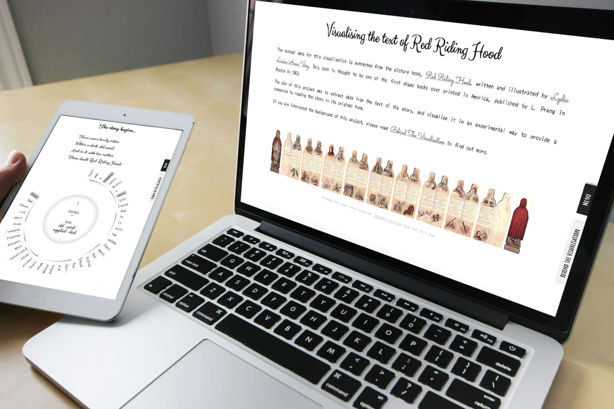
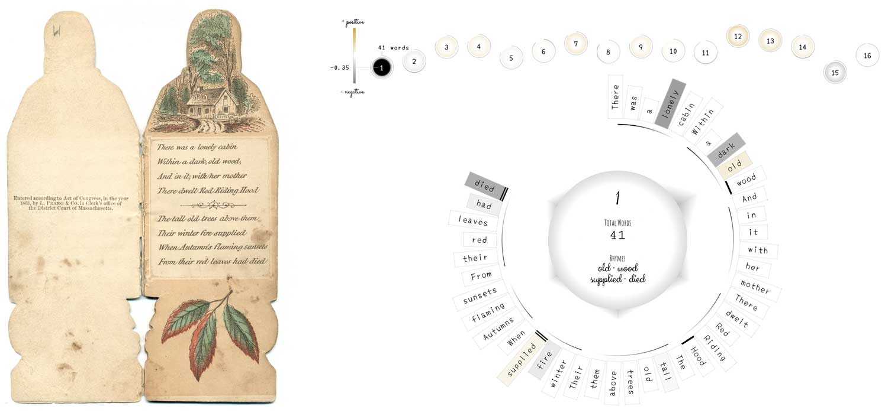
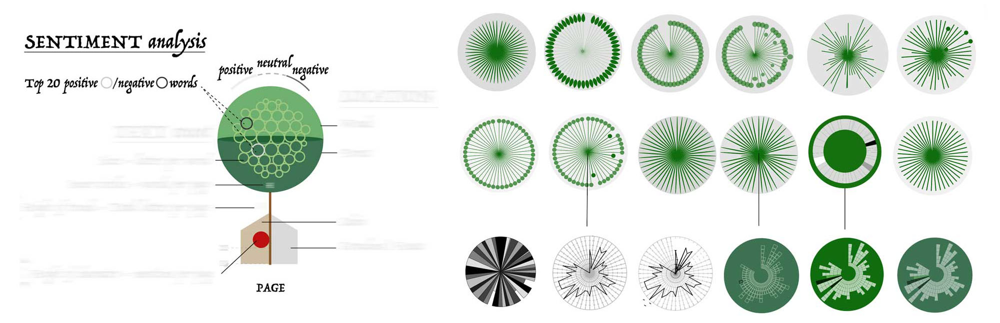
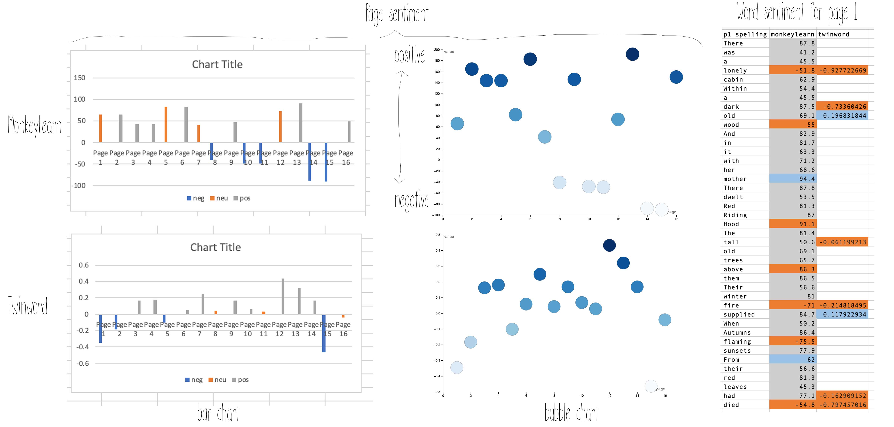
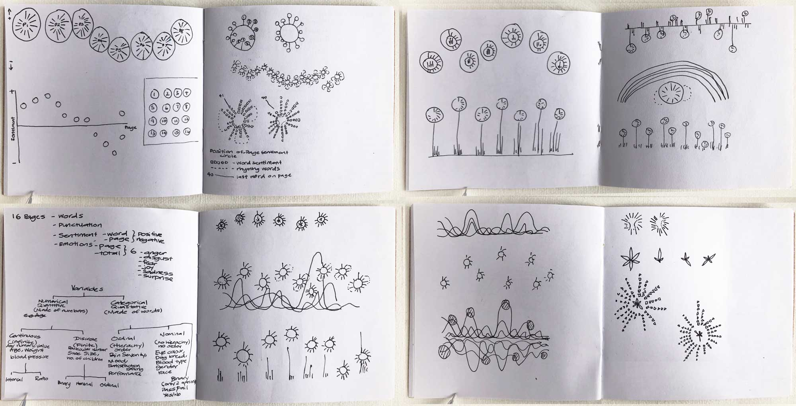
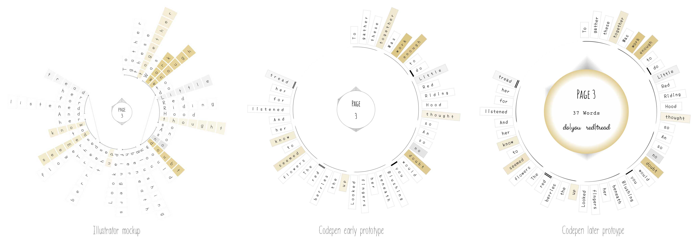
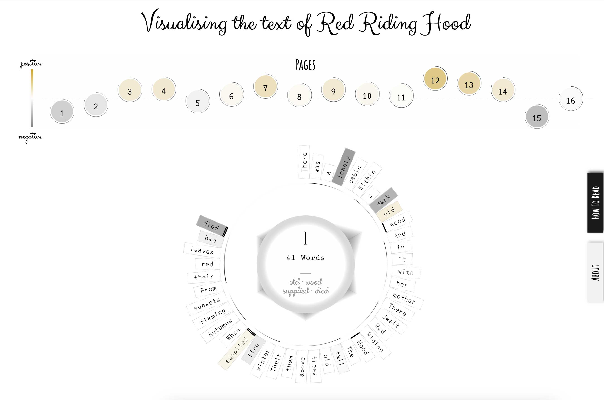
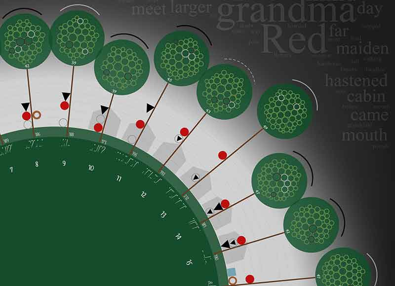
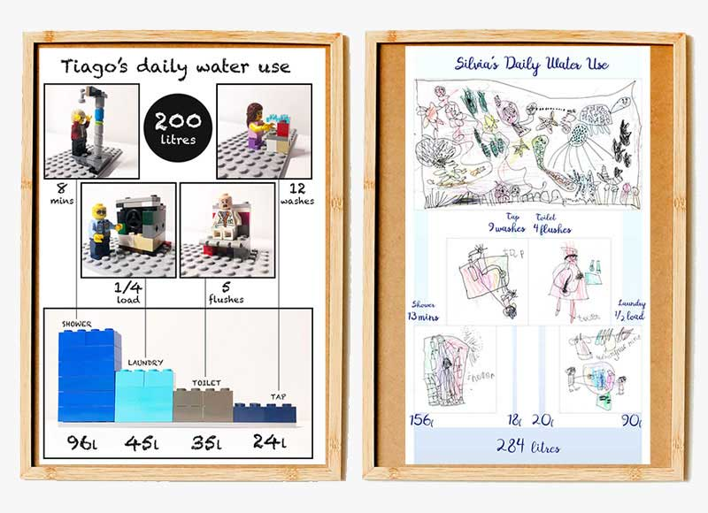

Data
Red Riding Hood 2
Worked with layered narrative datasets combining sentiment analysis with visual storytelling systems

Context
This project sits between personal development and applied experimentation and builds on a previous data visualisation exploration, using it as a foundation to deepen both technical and conceptual approaches. It focuses on reworking an existing dataset to explore alternative representations, particularly around how emotional and linguistic data could be represented more meaningfully. It became an opportunity to deepen technical and visual skills while experimenting with more complex narrative structures and analytical layers.
Approach
I combined manual data processes, sentiment and emotion analysis, and iterative prototyping to evolve the visual system. Moving from static design to coded implementation, I explored how CSS-led approaches could support responsive, interactive storytelling while balancing clarity with density of information. Iteration, reflection, and external feedback played a key role in shaping both the visual system and interaction model.
Elevating Data Visualisation Skills and Expanding Prior Work
Since I learnt a lot from my last project, I started a new data visualisation course with Frederica Fragapane to further develop my skills and explore new approaches. Rather than starting from scratch, I revisited the same dataset to push it further and explore ideas I hadn’t been able to implement previously.

Incorporating Sentiment Analysis and Exploring Techniques
Building on earlier feedback, I explored ways to integrate sentiment analysis more meaningfully into the visual system. I experimented with representing all words in circular layouts to retain positional meaning while maintaining a minimal visual language.

Reevaluating Sentiment Analysis Tools
I revisited the sentiment analysis process and identified inconsistencies in previous tools, leading me to switch to Twinword for more accurate and efficient results.

Sketching Ideas and Data Wrangling
I explored multiple layouts and data transformations, including adapting RAWgraphs outputs to create circular word structures.

Prototyping with CSS and CodePen
I transitioned from Illustrator into code, using CSS and CodePen to create responsive and interactive prototypes. Iterations focused on simplifying interactions while maintaining the integrity of the visual system.

Iteration, Feedback and Refinement
Through peer feedback and participation in a Data Visualisation Society session, I refined navigation, clarity, and storytelling elements.

Impact
This project demonstrated how multiple analytical perspectives could be integrated into a single visual system, enabling users to explore narrative content through different interpretive lenses while maintaining clarity and coherence. In tackling this challenge, I significantly advanced my approach to data visualisation, particularly in designing systems that bring together multiple layers of analysis without overwhelming the user.
~
Many thanks to several in the
KDL team
for your feedback along the way, and editorial review by Samantha
Callaghan and Neil Jakeman.
~
Related Projects
-

Red Riding Hood
Emotional and sentiment analysis integrated into narrative data visualisation
Data
-

Little Pictures
Emotional and sentiment analysis integrated into narrative data visualisation
Data
-

Water Consumption
Emotional and sentiment analysis integrated into narrative data visualisation
Data